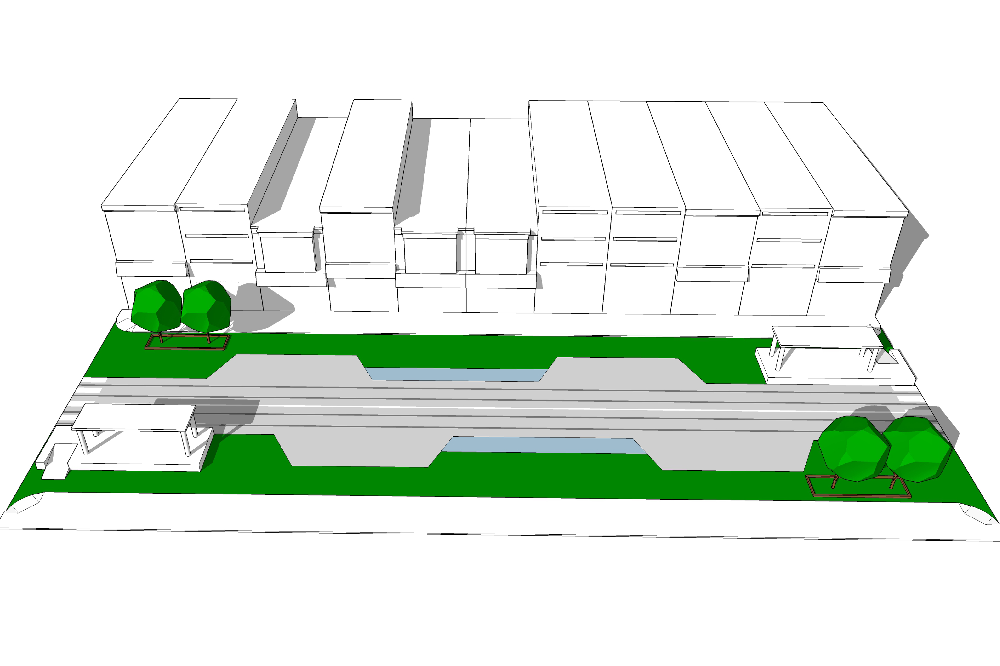
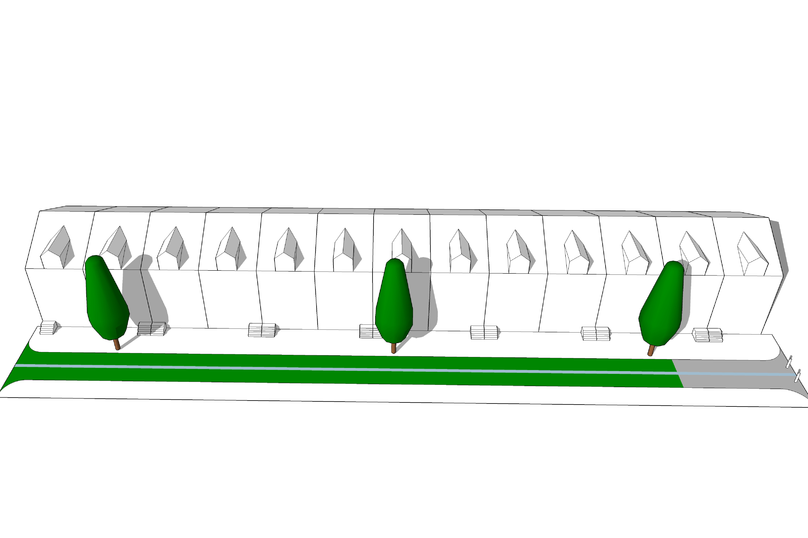

Moving

Meeting
Living

Playing
Distributing
Streets
Conditions
In 2060, Philadelphia streets are places that people stay in, rather than just move through. Streets serve the public realm and transportation network. They are accessible, flexible, and useful for every resident and visitor.
Typologies
Moving
Meeting
Living
Playing
Distributing
Strategies
Require Only Off-Street Parking
Ban Private Cars in the Urban Core Zone
Create a Network of Separated-Mode Arterials
Allow for Shared-Mode Residential and Commercial Lanes
Utilize Reclaimed Right-of-Way as Public Space
Design Environmentally Responsive Streets
Facilitate Shipping and Deliveries


Getting Started